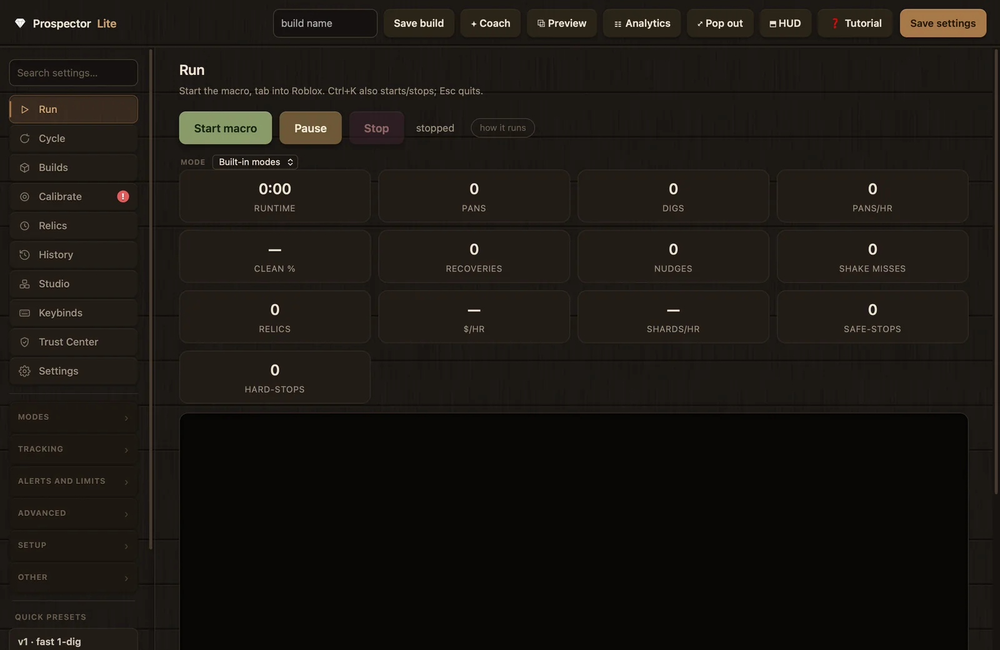
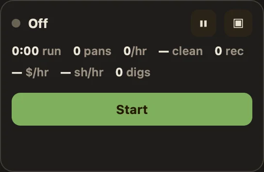
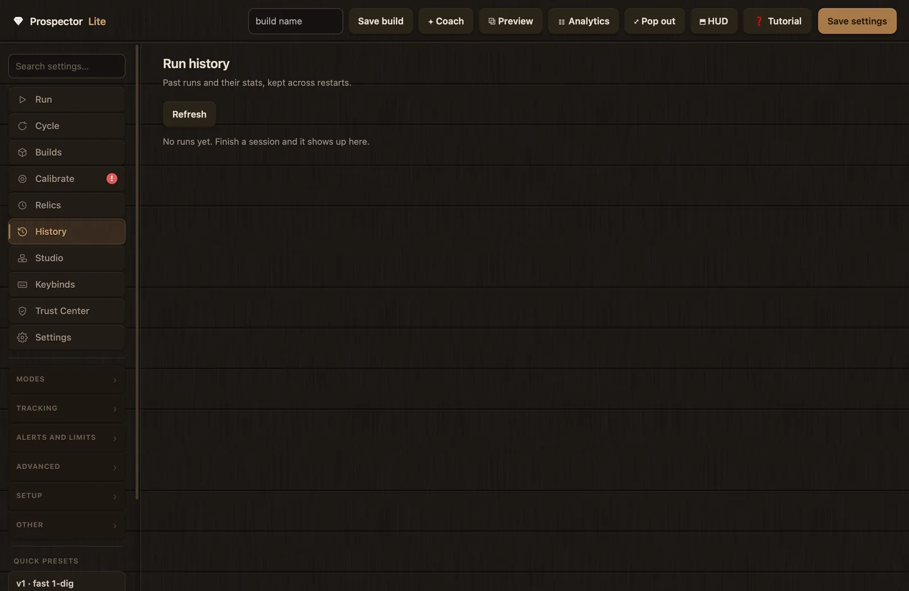

Guides
Analytics, HUD and history
Prospector Lite keeps score of a session in four places: the stat strip on the Run tab, the Analytics window, the HUD overlay beside the game, and the pop-out pill. This page explains what each counter means, where the numbers come from, and how finished runs are stored on the History tab. It ends with a table that maps metric movements to the specific settings worth changing.
The 13 Run tab stats
The stat strip sits on the Run tab, directly below the Start, Pause and Stop buttons. While the macro runs, the engine emits a stats snapshot every 2.0 seconds; the app forwards that same snapshot to the Run tab, the HUD, the pill and the Analytics window, so the four surfaces always agree. Starting a fresh run clears the counters; pressing Stop writes the final snapshot to History.

Hover any tile while the Preview panel is open (the ⧉ Preview button, covered in the Interface reference) and the panel labels it "Live stat" and shows the full in-app explainer. The table below gives the tiles in their on-screen order, with the explainer content condensed.
| Stat | What it counts | Reading it |
|---|---|---|
| runtime | The session clock since Start. Paused time is not counted, so this is the clock behind the per-hour figures. | Give it a few minutes before trusting pans/hr or $/hr; the early readings swing. |
| pans | Completed loops. One pan is dig, walk back, shake, land. The number the other stats are measured against. | Should climb steadily. If it stops moving the macro is stuck; check recoveries and the log. |
| digs | Total digs, probe digs included. | On a one-dig build it should sit close to the pan count. Far more digs than pans means it is probing or re-digging too much. |
| pans/hr | Pans per hour at the current pace, the headline speed number. | Settles after a few minutes. To raise it, trim the widest blocks on the Cycle timeline. |
| clean % | The share of pans that ran start to finish with no nudges, retries or recoveries. Shows a dash until at least one pan has finished. | High on a dialed build. A falling value tells you which counter to read next: nudges, misses or recoveries. |
| recoveries | Recovery ladder activations: the macro got stuck, then nudged or broke itself out. | A few per session is normal. A climbing count means it keeps getting wedged; check calibration first, then the spot. |
| nudges | Small corrective movements while the macro hunts for land after a shake. | A handful per session is normal, zero on a dialed build. Climbing means it is landing short or in the water; fix the momentum first, not the probing. |
| shake misses | Shakes that did not empty the pan. | The occasional miss is normal. Persistent misses often mean the capacity bar ends need recalibrating. |
| relics | Relics placed automatically this session by your timers. | Stuck at zero with timers configured? Check the master switch, the rows, and the hotbar slots. |
| $/hr | Money per hour, read off the game HUD and credited as gains only. Shows a dash until money has actually been credited. | Needs earnings tracking on and the Money region drawn; the in-app help marks this reader macOS only. |
| shards/hr | Shards per hour, the same mechanism applied to the shard total. Dash until shards have been credited. | Needs earnings tracking on and the Shards region drawn. The number to watch on a shard farm. |
| safe-stops | Times the macro paused itself and retried instead of quitting. | A few is fine; a recovered safe stop costs about a minute, not the run. A climbing count means it keeps hitting something it cannot handle. |
| hard-stops | The retries ran out, or something unrecoverable happened. | A repeating hard stop usually means calibration. The History timeline names the reason for each stop. |
Dashes, zeros and big numbers
Three formatting rules keep the tiles from lying to you. Values of 1,000 or more shorten with a suffix (K, M, B, T, Q, with one or two decimals, so 1,240,000 renders as 1.24M). Per-hour figures are held at zero for roughly the first three seconds of runtime, because dividing by a near-zero clock produces nonsense. And clean %, $/hr and shards/hr show a dash rather than a fake zero until they have something real to report: at least one finished pan for clean %, and at least one credited gain for the earnings pair.
The tuning health banner
The Run stats double as the input to a simple health check. On each stats tick, once 5 or more pans have completed, the app computes per-pan rates for three counters and compares them to fixed thresholds:
| Counter | Flags at | What the banner tells you |
|---|---|---|
| nudges | 0.6 or more per pan | Lots of nudges: struggling to reach land, so raise Land settle in the Land stage. |
| shake misses | 0.4 or more per pan | Frequent missed shakes: raise the shake start delay in the Glide stage. |
| recoveries | 0.5 or more per pan | Frequent recoveries (getting stuck): re-check calibration and ease the Safety nets limits. |
When any threshold trips, the Cycle page shows a banner that opens with "Tuning may be off.", summarizes the flagged counters from your last run, and marks the matching Cycle stages with yellow badges. The deeper diagnostics layer uses the same nudge and shake-miss thresholds for its PP-D-NUDGE-FAR and PP-D-SHAKE-LATE warnings; see Troubleshooting and FAQ for how the Warnings drawer walks you to a fix.
The Run tab also hosts the relic timer chips, the "set timer" row, the geode countdown bar and the live log pane. Those controls are documented in the Interface reference.
The Analytics window
The ☷ Analytics button in the top bar (tooltip: "Open the analytics dashboard") opens a separate window titled "Analytics, Prospector Lite". It starts at 980 by 860 pixels and resizes down to 620 by 560. The OS close button hides the window rather than destroying it, so it reopens instantly with a fresh render. The header reads "Prospectors Analytics" with a status word at the right: "running", "idle", or "engine off".

The window polls the app every 1.5 seconds and receives the same live stats snapshot as the Run tab, plus the most recent finds. Each section header and card carries a hover explainer; the tables below condense that text.
Throughput
Raw speed: how many pans you are completing and how fast. The app's own advice on this section is blunt: if these numbers are lower than you want, the fix is on the Cycle page; trim the widest blocks on the timeline.
| Card | Shows | Beside it | How to read it |
|---|---|---|---|
| Pans | Total completed loops this session | The clean share as a percent | The base number the other stats are measured against. |
| Pans / hr | Pace at the current moment | Session runtime | Swings early, settles as runtime grows. The headline speed number to tune against. |
| Cycle time | Mean seconds per pan | p50 (median), p95 (the slow tail), and your last pan | A big gap between p50 and p95 means some pans are stalling, usually recovery or hunting for land. |
| Digs (registered) | Digs that registered, probe digs included | Digs per pan and total clicks | Far more digs than pans means it is probing or re-digging too much: fix momentum (Glide and start) or turn on Smart fill wait. |
Earnings
Measured money and shards, read off the game's own HUD. This section needs Track money and shards turned on and the Money and Shards regions calibrated; see Calibration for drawing the regions. The in-app help marks the earnings and finds readers macOS only; without them the cards stay at zero or a dash.
The reader is deliberately conservative. A background thread OCRs the two calibrated regions, and a value counts only when two reads taken 250 ms apart agree, so a misread that does not repeat is discarded. Only positive changes are credited, which means spending money mid-run does not subtract from the session total. Each region must be at least 12 by 8 pixels; when tracking is off or uncalibrated, the reader silently does nothing.

| Card | Shows | Beside it | How to read it |
|---|---|---|---|
| Money | Money earned this session | Per hour and per pan | Credited as the gain between HUD reads; spending is ignored. |
| Shards | Shards earned this session | Per hour and per pan | Same mechanism as Money, applied to the shard total. |
| Loot value (kept) | An estimate of what the finds you keep are worth | Estimated value per hour | Item prices times your sell boost (the boost defaults to 100, meaning 1.0x). Separate from Money, which is coins already sold. |
| TOTAL / hr | Money per hour plus estimated kept-loot value per hour | The sub-line reads "money + kept loot" | The fullest read on what a build actually earns. The app's help calls it the best single number for comparing builds; see Modes and builds. |
Finds
The Finds header summarizes what you dug up inline: item count, total kilograms, and your heaviest single find, plus a stack count and a low-confidence count when those apply. Below it sit two chip rows, each sorted most common first (or reading "none yet" when empty):
- rarity: the rarity breakdown of this session's finds, a quick read on how luck is shaping the drop mix.
- modifier: the modifier breakdown. Modified ores (Perfect, Mutated, Iridescent and so on) are worth much more, so this row is a quick read on modifier luck.
Like earnings, finds tracking needs its toggle on and the Find region calibrated, and the in-app help marks it macOS only.
Reliability
How smoothly the run went. A clean run sits high on clean cycles and near zero on the rest; when a number here climbs, it points at a specific Cycle stage to tune.
| Card | Shows | Beside it | How to read it |
|---|---|---|---|
| Clean cycles | The share of pans with no nudges, retries or recoveries | The raw count, as N of M | A tuned build sits high. A falling share means a problem is creeping in. |
| Recoveries | How often the recovery ladder stepped in | Nudges and shake misses | Climbing nudges means landing short (fix momentum); climbing shake misses means the pan is not emptying (fix the Shake stage). |
| Shake retries | Shakes that had to be re-attempted | Outright fails | A few is normal on any build. A lot means shakes are not starting or not emptying: look at the Shake and Glide stages and the capacity calibration. |
| Stops / pauses | Safe stops versus hard stops | Pauses and relics placed | Safe stops that recover are fine; repeated hard stops usually mean calibration or the spot. Check the History timeline for the reason. |
The find log
The bottom section, headed Find log with a running count, lists the last 120 detected items newest first in five columns: t, item, kg, rarity, ~value. The item cell prefixes the modifier when there is one (Perfect, and so on), appends a dim ? when the read's confidence was below 0.3, and a dim xN for duplicate-proc multipliers. Before anything is detected the section reads: "No finds logged yet. Enable Finds tracking + calibrate the pop-up corners."
The HUD overlay
The HUD is a small frameless card (384 by 470 pixels) that stays on top of other windows so you can park it beside Roblox and watch the macro work without alt-tabbing. Toggle it with the ⬒ HUD button in the top bar; the app toasts "HUD on, drag it beside Roblox" or "HUD hidden". Drag it anywhere: the position is saved when you hide it and restored when you show it again, and the default spot is the right edge of your main display. The ✕ in its corner hides it too, and the card's own footer says so: "drag to move · HUD button in the app hides me".

What the card shows
- Header: an LED (grey when idle, pulsing green while running, amber while paused), the current stage in plain words (DIGGING, HOLD S to water, HOLD W glide, SHAKING, SETTLING, RECOVERING; stopped when idle, PAUSED while paused), and the runtime clock at the right.
- Six counters: pans, /hr, clean, finds, lag and miss. The lag cell shows the worst recent input-timing lag in milliseconds, or "ok" when none was recorded; a worst case above roughly 20 ms also writes a log line noting that background load is fighting the input thread.
- Geode countdown: appears only during geode animation waits, counting down in tenths of a second.
- Script status: during Studio Script runs, a line with the block type, block id, pass and step, plus the script's own HUD text line.
- The live cycle strip: covered in the next section, because its content changes with the run mode.
- Events feed: the last 4 engine events. Nudges, recoveries and recenters render amber; failures, no-progress, break-outs, safe stops and hard stops render red. Finds interleave as green lines with the item name and weight: the find ticker.
The cycle strip changes per mode
The strip only draws what it can back up in the current mode, and shows no estimated values where none exist:
- Classic: titled "cycle, live". It draws the modeled pan cycle as colored dig, S-walk, glide, shake and land segments with hatched zones for the min to max uncertainty, a caption reading "est X.XXs · ≈N/hr" (the modeled cycle time and the pans per hour it implies), and a white playhead that sweeps through the current stage in real time as phase events arrive. It is the same model the Cycle page uses.
- Studio Build: titled "build phases, as observed". A neutral three-block DIG / WATER / SHAKE strip that lights whichever block the engine actually reported. Nothing is estimated.
- Studio Script: the strip and its title are hidden entirely; the script step line and the script's own HUD text are the status.
PP_NO_HUD=1 skips creating the HUD window entirely; the HUD button then answers "unavailable".The pop-out pill
The ⤢ Pop out button (tooltip: "Pop out a floating control") swaps the main window for a tiny always-on-top pill, 272 by 178 pixels, with just enough control to run a session: a status readout, a pause button titled "Pause / Resume (keeps session)", a ▣ button titled "Back to app" that restores the main window, and a large Start / Stop button. The global hotkey Ctrl+P (rebindable on the Keybinds tab as "Toggle pop-out pill") flips between pill and main window from inside the game. The pill polls the app once per second.

Status words and stat rows
| Engine state | Pill shows |
|---|---|
| running | Running |
| paused | Paused |
| safe-pause | Safe-pause |
| recovering | Recovering |
| stopped | Stopped |
| idle | Ready · press start key |
| off | Off |
The dot beside the status word pulses green while running and turns amber for warning states. Below it, stat row one shows runtime, pans, pans per hour, clean percent and recoveries; row two shows $/hr, sh/hr and digs, with the earnings cells reading a dash until money or shards have actually been credited. When relic timers are active, a third row lists the first word of each relic's name with its m:ss countdown. Numbers use the same K/M/B/T/Q short format as the Run tab.
When Start is refused
The pill's Start button launches with your saved settings. If the launch is refused, the pill does not leave you with a dead button: the status flashes "needs permission", "needs calibration", or "blocked", and the main window is restored so you can see the full reason and the fix. Missing permissions are explained on Trust and permissions; calibration blockers on Calibration.
Run history
The History sidebar tab is headed "Run history" with the hint "Past runs and their stats, kept across restarts." It loads when you open the tab, and the Refresh button reloads the list from disk, which pulls in a session that just ended.

What gets recorded
The app, not the engine, appends each finished run to run_history.json in the data directory. This matters because Stop kills the engine process before the engine could save anything itself; the app holds the last stats snapshot and writes the record once per run. It also writes on app quit, so a session cut short by closing the app is still logged. Runs with no runtime and no pans are skipped. Each entry contains:
- the final stats snapshot (the same fields the Run tab and Analytics show);
- the stop reason (falling back to "manual") and an ended timestamp;
- the run id, mode and Studio revision, recorded only when they are actually known;
- a
synthetic: trueflag when the app synthesized the stop after an engine crash; - per-type event counts, per-reason counts, and a timeline of the last 250 events;
- per-phase timings: how many times each phase ran, with mean and p95 duration;
- a pointer to the full run log.
Full logs are written per run to run_logs/run-YYYYMMDD-HHMMSS.log (the last 40,000 lines of the run), and the folder keeps the newest 120 files.
Anatomy of a run card
- Header: the ended timestamp in bold; a "Tracker" badge for watch-only runs; a badge with the Studio script name if one ran; a badge with the stop reason (for example
manual,auto,bag-full); and the runtime at the right. - Eight stat cells: pans, pans/hr, digs, clean, recoveries, nudges, relics, finds.
- Earnings line: present only when money or shards were tracked, in the form "earned: $X ($Y/hr, $Z/pan) · N shards".
- Phases line: mean and p95 duration per phase, when phase timings were recorded.
- The "why" line: event reasons grouped by type in a fixed severity order, with the labels Safe-stops, Hard-stops, Nudges, Recoveries, Break-outs, Failed shakes, Shake-glitch, No-progress, FR recovery, X recenter and Relics, each showing its top three reasons with counts. This line is the fastest way to answer "why did that run end".
- "Detailed timeline (N events)": a collapsible list of the last 150 events, each with its time offset, type and reason.
- Footer: a "View full log" button that opens the saved log in a "Run log" modal, or the text "no saved log". Asking for a log that no longer exists answers "log not found (older runs may not have one)".
Reading the numbers
The counters earn their keep as pointers. Each movement below names the metric, what it usually means, and the specific place to act, with links into the Settings reference.
| What you see | What it usually means | Where to go |
|---|---|---|
| pans/hr lower than you want, other counters quiet | The cycle itself is slower than it needs to be. | Trim the widest blocks on the Cycle timeline; the Cycle page shows modeled time per stage. |
| Big gap between p50 and p95 Cycle time in Analytics | Some pans are stalling, usually recovery or hunting for land. | Read recoveries and nudges next; the stalled pans will show up in one of them. |
| digs far above pans | Probing or re-digging too much. | Fix momentum first (the Glide stage and its start timing), or turn on Smart fill wait. |
| clean % falling | A problem is creeping in somewhere. | Read nudges, shake misses and recoveries to see which stage it is. |
| nudges climbing | Landing short or in the water after the shake. | Raise Walk forward before shaking, Delay before shake starts, or Land settle. Land assist, which confirms the Deposit cue before probing, also helps here. |
| shake misses climbing | The pan is not emptying. | Review Exact shake clicks, Each shake click length and Pan-empty threshold. Persistent misses often mean the capacity bar ends need recalibrating; see Calibration. |
| recoveries climbing | It keeps getting wedged. | Re-check calibration first, then the spot. Ease the Safety nets limits and review Stuck reads before recovery. |
| safe-stops climbing | It keeps hitting something it can pause through. | A few is fine. When frequent, treat it like recoveries: calibration first, then the spot. |
| hard-stops repeating | The retries ran out; usually calibration. | Re-run the capacity bar end calibrations, then open the run's History timeline, which names the reason for each stop. |
| relics stuck at zero with timers set | The timers are not placing anything. | Check the master switch (Enable relic timer), the relic rows, and the hotbar slots. |
| $/hr or shards/hr stay dashed | Nothing has been credited yet. | Turn on Track money and shards and draw the Money and Shards regions in Calibration. The in-app help marks these readers macOS only. |
| HUD lag cell above roughly 20 ms | Background load is fighting the input thread; timed inputs wake late and timings drift. | Close heavy background apps, then watch whether nudges and shake misses settle. |

You do not have to do this mapping alone. When a counter crosses a diagnostic threshold, the affected sidebar tab gets a red or yellow badge; clicking it opens the Warnings drawer, which states what was observed with the numbers, names the most likely cause with a confidence label, lists the settings to review as current → suggested values, and can apply a suggestion with one click. The Coach offers a chip labeled "analyze my stats and make it faster" that feeds your current stats to the tuning assistant. Both are covered in Troubleshooting and FAQ.